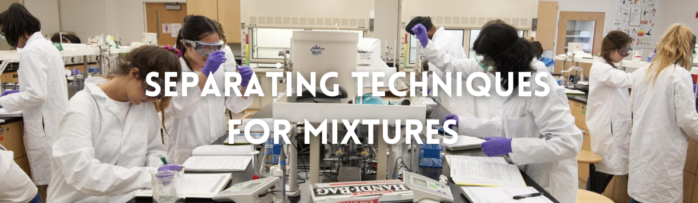
Separating Mixtures
In our daily lives, we use items that require substances that are very rarely found on its own and is very often found mixed in with another substance. In these cases, we have to separate the mixture into different substances to aquire what we need.
But how do we separate seemingly unseparable substances?
Mixtures can be separated by using methods that take advantage of the differences in physical properties of the different substances present in the mixture. There are multiple different techniques used in separating mixtures such as sieving, evaporation, distillation, filtration, and chromatography.
Table of Contents
- What are the techniques used in separating mixtures?
- Sieving
- Use of Magnets / Magnetic Separation
- Decantation
- Evaporation
- Filtration / Sedimentation
- Extraction
- Chromatography
- Paper Chromatography
- Liquid Chromatography
- Gas Chromatography
- Distillation
- Simple Distillation
- Fractional Distillation
- Centrifugation
- Hand-picking
- Threshing
- Winnowing
- Crystallization
- Fractional Crystallization
- Flotation
- Sublimation
The different techniques in separating mixtures
Separating mixtures into different different substances require many different techniques. Here are the techniques most commonly used:
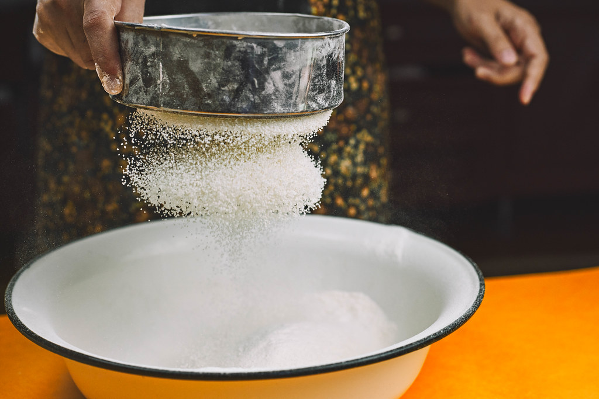
Sieving
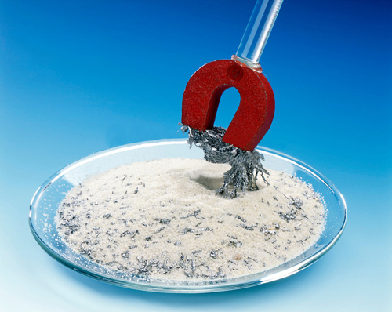
Magnetic Separation
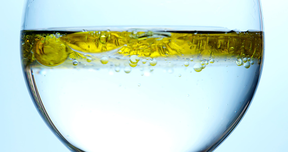
Decantation
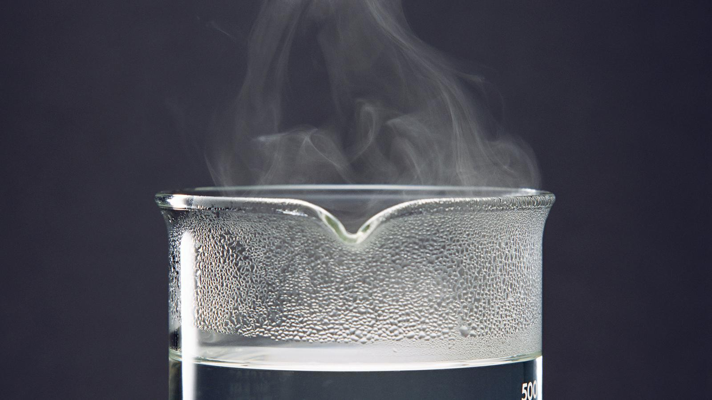
Evaporation
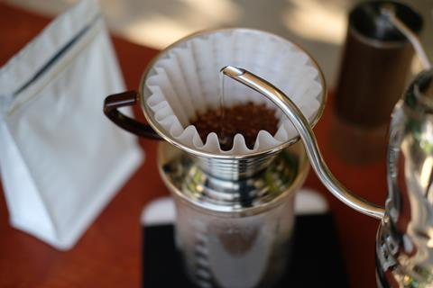
Filtration
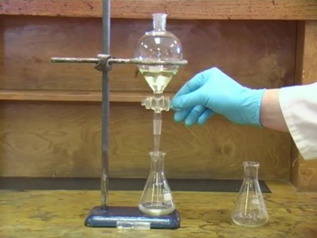
Extraction
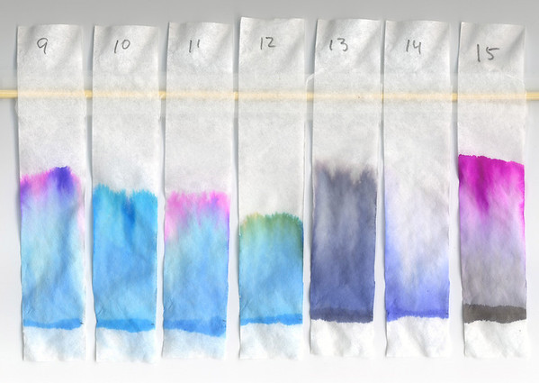
Chromatography
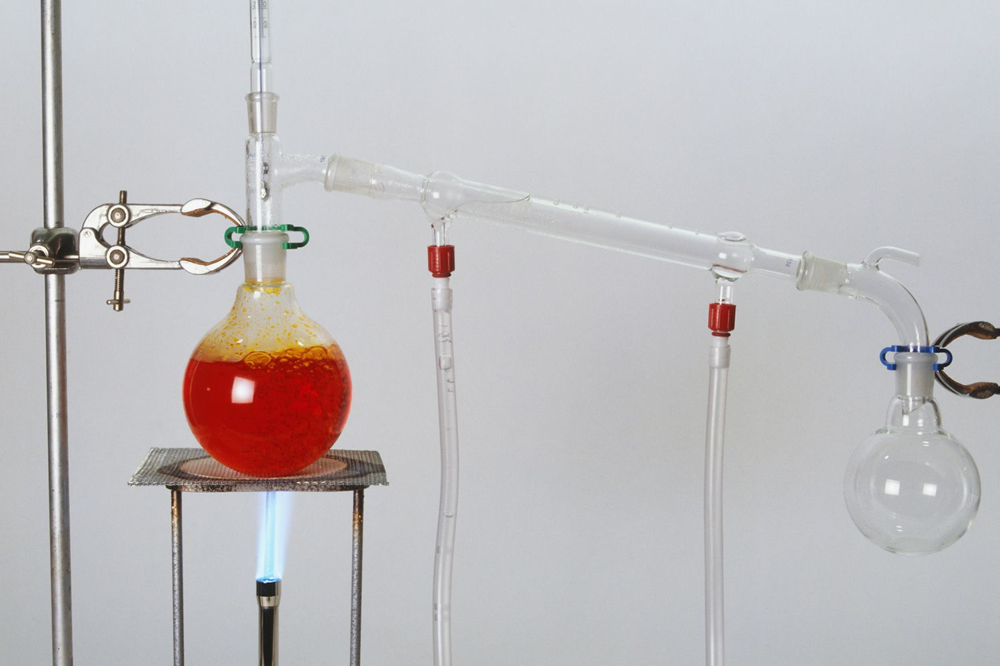
Distillation
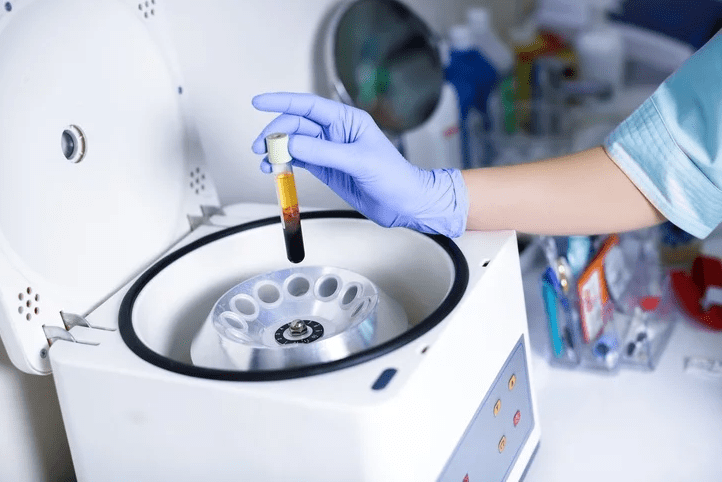
Centrifugation
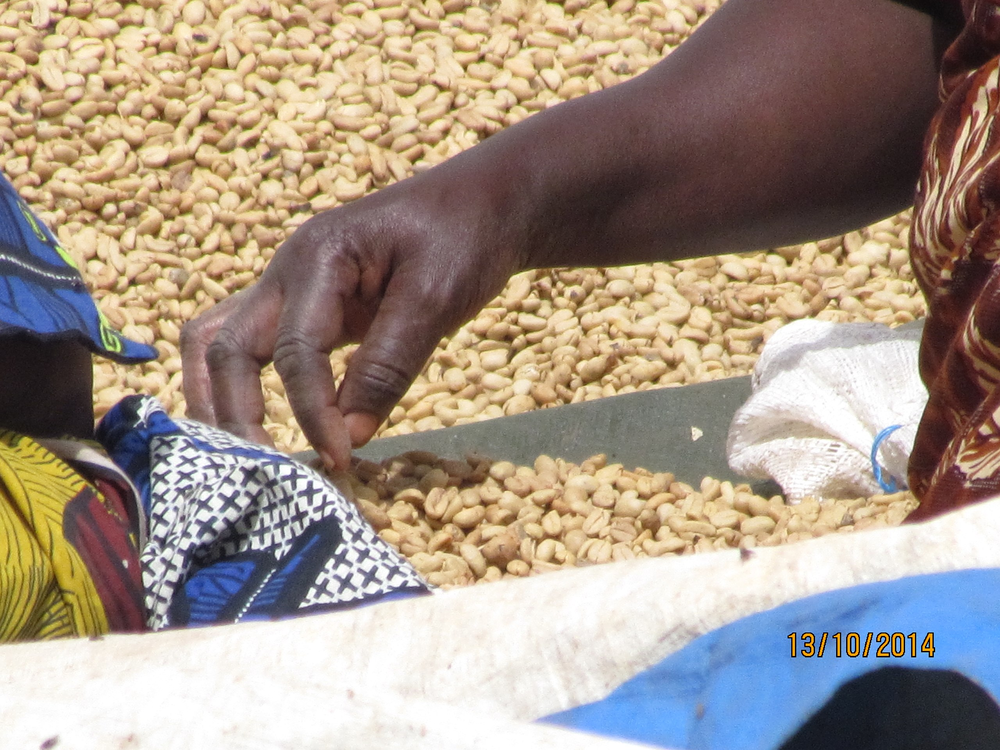
Hand-picking

Threshing
Winnowing
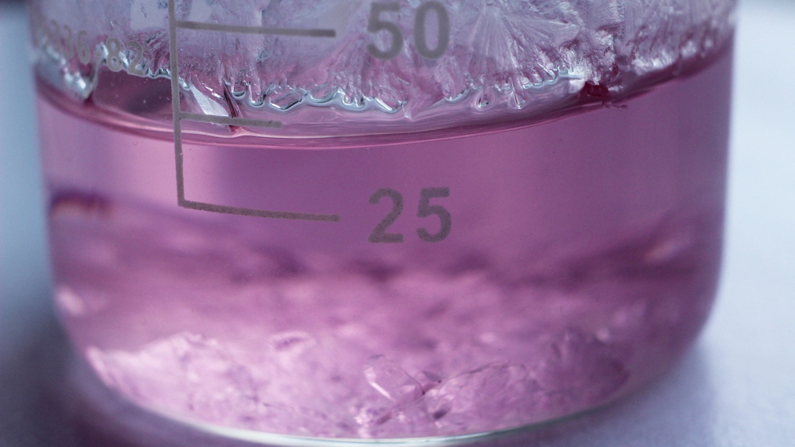
Crystallization
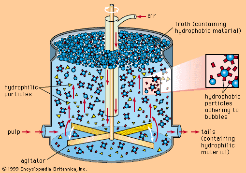
Flotation
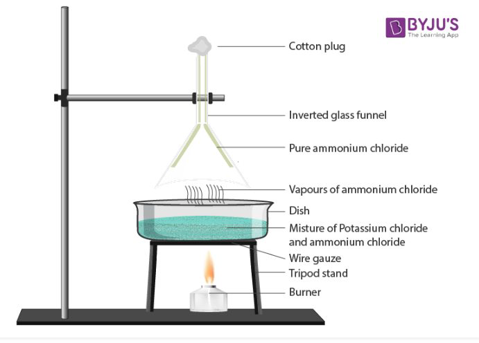